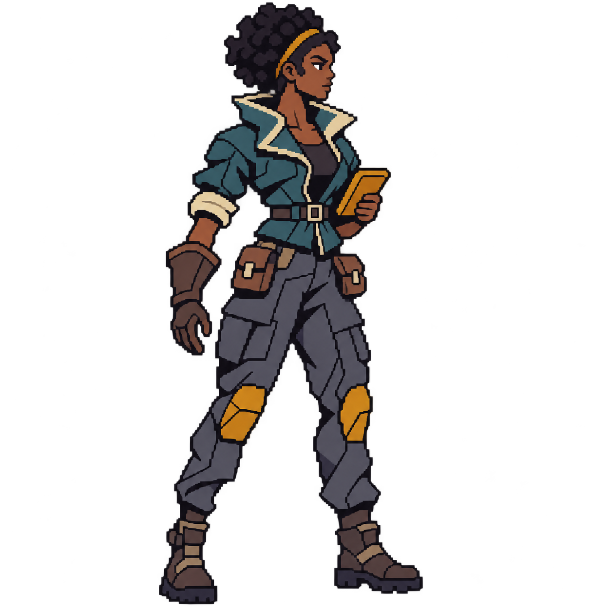

Reconnaissance
Rook
Rook relève l’état des accès, des passerelles et des voies de repli avant chaque sortie.
Elle vérifie sur le terrain les trajets proposés par Parallaxe. Son terminal sert à noter les imprévus. Son gant de fauconnerie l’accompagne lorsqu’elle doit observer la station depuis les hauteurs.
Consulter le dossier de Parallaxe